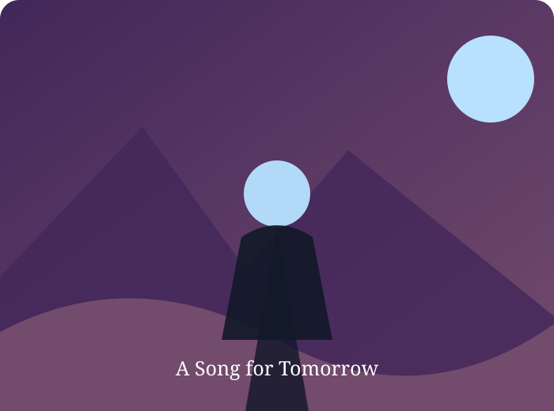

A Song for Tomorrow

While cleaning the attic, Mika finds a song her father wrote long ago and uses it to ask the questions their family avoided.
A Song for Tomorrow is a story about drama, small choices, and the unexpected ways people change. At first, the answer seems simple: take one step and hope for the best. But the journey asks Lio to look closer, listen carefully, and trust the quiet feeling that something meaningful is possible.
By the end of that day, nothing is exactly the same. The mystery is not that life suddenly becomes easy; it is that courage often looks ordinary from the outside. It is choosing to speak, to stay, to leave, or to begin again—even when the next page is uncertain.
And so the moment passes, leaving behind a lesson that is easy to forget and worth remembering: the smallest decision can open a door to a whole new world.